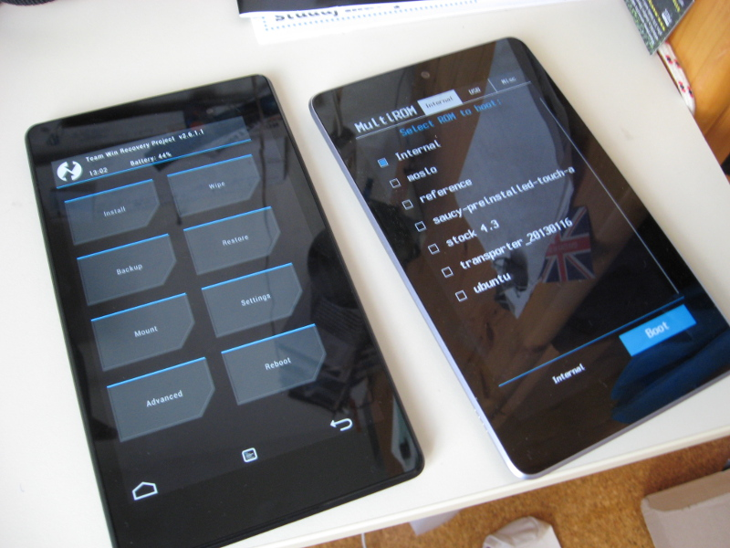

Status of the MultiROM for flo
This project is maintained by Tasssadar
Hosted on GitHub Pages — Theme by orderedlist
My new Nexus 7 has just arrived from the UK and it seems to be pretty okay, it doesn't even have the touchscreen issue (/me knocks on the wood). So, let's get working!
It's done! After 24 days, the campaign is now fully funded. Thank you all very much for your contributions and support.
What happens now?Indiegogo tells me that the money should arrive within 5 business days. When that happens, Nexus 7 should be available in the UK - I plan to buy it there and then send it to the Czech Republic. Hopefully, it won't take too long to arrive. After that, it depends just on my ability to code.
About testing/beta releasesI don't do any "testing releases" nor release things first to some "beta testers" - everybody gets the fixes and new features as soon as possible. We're on XDA, not in top-level enterprise environment, where everything has to work for years without changes, so I don't think any extra testing is needed - I can test most of the things by myself (and I do). Anything extra would just prolong the time before it's released for pretty much no reason.
I will post updates on my Google Plus account as well as this page. It even has a RSS feed, which you can add to your reader.
{kind=link}